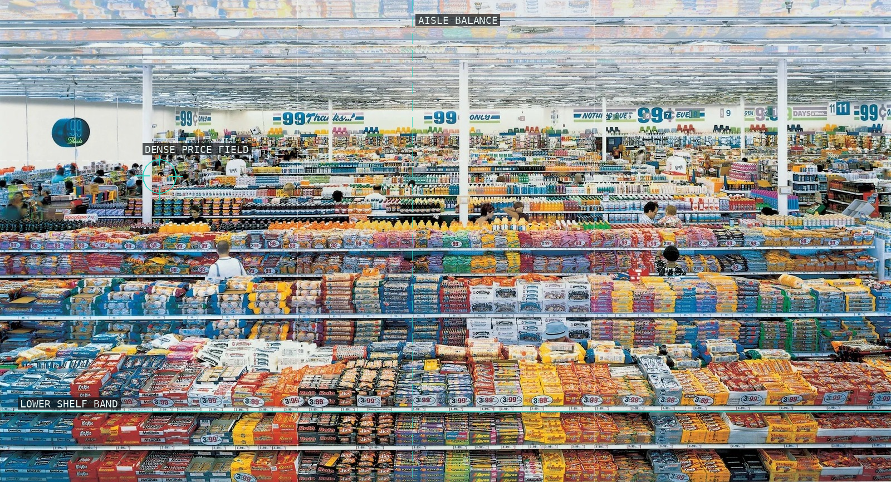
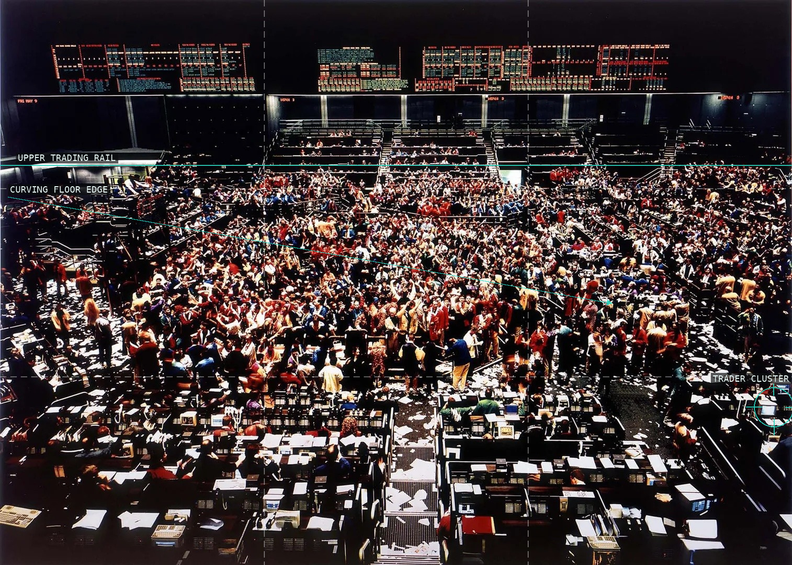
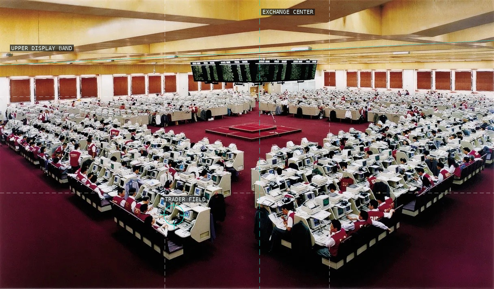
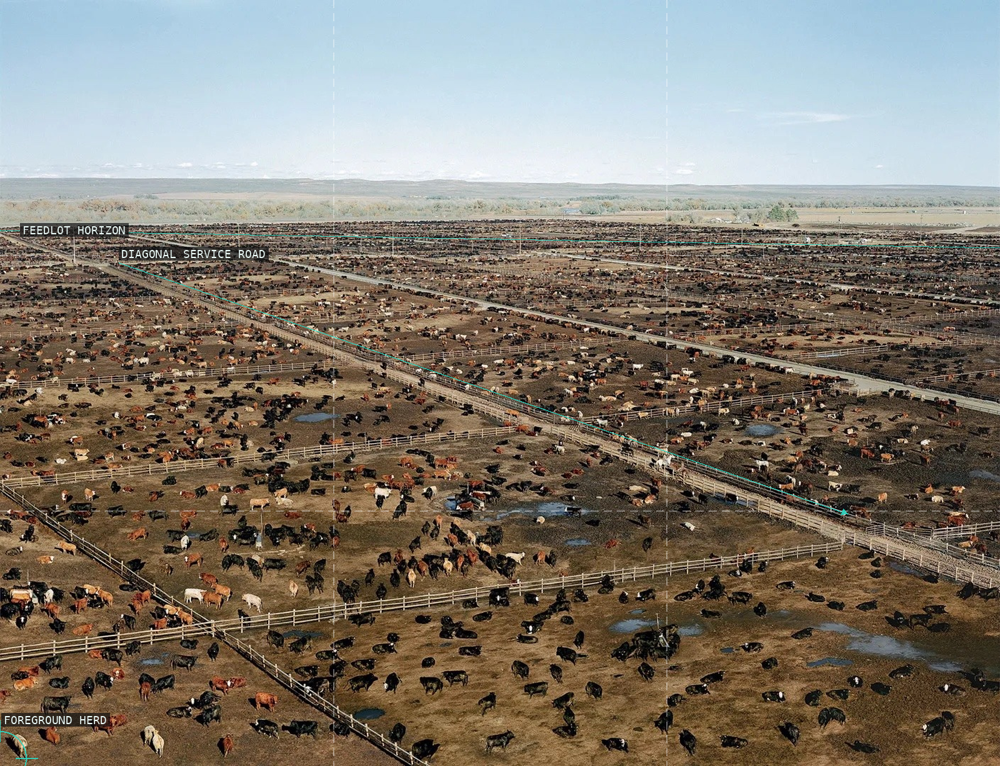
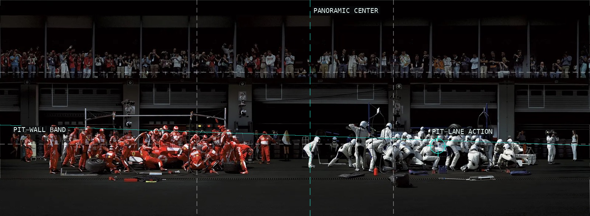
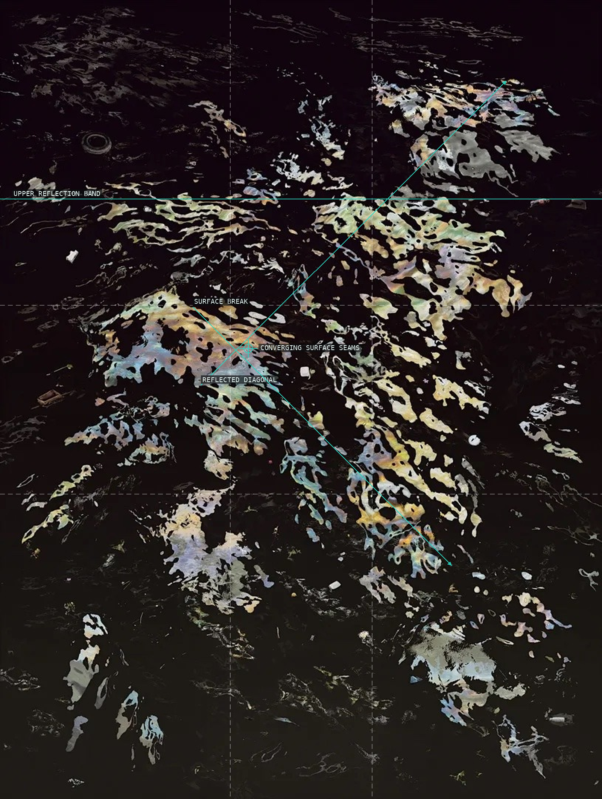
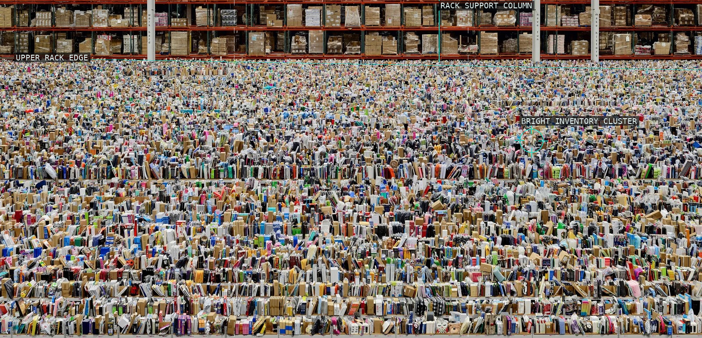

Stacked shelves and their reflection turn retail abundance into a nearly symmetrical field.

An elevated viewpoint converts a trading floor into a packed, layered pattern.

Tiered terminals and bodies build a dense, nearly bilateral information surface.

A low horizon and immense repeated herd make industrial scale visible as a field.

A panoramic strip sequences parallel pits, cars, and spectators into coordinated action zones.

The pitch's centre line and circle turn play into small deviations across a striped green field.

Reflections and debris hold a polluted river surface between landscape and abstraction.

A centered globe and platform bridge the upper card mosaic and the dense lower field of performers.

Warehouse racks and scattered stock turn logistics into a dense distributed tableau.

Repeated worktable rows and a dense weaving cluster make labor read as a patterned plane.

A lit stage at left and a packed audience at right make concert spectacle a theatrical field.

A station axis and layered commuters turn the interior into a symmetrical social field.